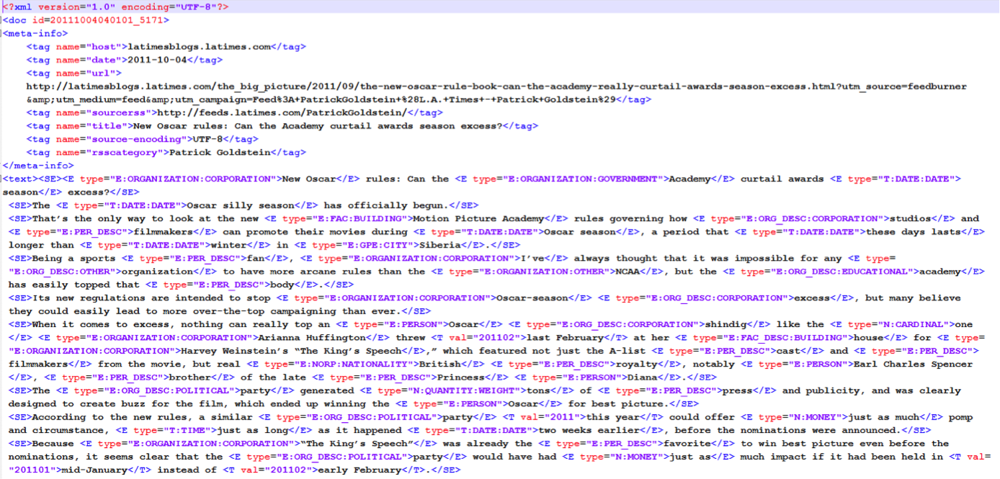

Document Collection
NTCIR-11 Temporalia uses a web corpus, called
"LivingKnowledge news and blogs annotated subcollection", constructed by the
LivingKnowledge
project and distributed by
Internet Memory.
The collection is 20G uncompressed and over 5G zipped.
It spans from May 2011 to March 2013 and contains around 3.8M documents collected
from about 1500 different blogs and news sources.
The data is split into 970 files, named after the date of that day and some information
about its sources (there might be more than one file per day).
Each file contains a number of text documents.
For each document the following information is available
<doc id=lk-20130223040102_592>
<meta-info>
<tag name="host">www.spiegel.de</tag>
<tag name="data">2013-02-22</tag>
<tag name="url">http://www.spiegel.de/international/business/eu-widens-libor-scandal-investigation-and-threatens-heavy-fines-a-884948.html#ref=rss</tag>
<tag name="sourcerss">http://www.spiegel.de/international/index.rss</tag>
<tag name="title">EU Widens LIBOR Scandal Investigation and Threatens Heavy Fines</tag>
</meta-info>
<text>
...
</text>
The "doc id" refers to a unique document identifier in the collection.
The "host" contains the hostname the text was pulled from,
the "date" the publishing data of the document, the "url" the url the text was pulled from,
the "sourcerss" the rss that was accessed to retrieve the page, and finally,
the "title" the title of the page.
Between the <text> tags, there’s the content of the page.
This collection also provides three kinds of annotations: Sentence splitting,
Named Entities, and Time annotations.
Each sentence in the content of the page is surrounded by <SE> tags.
Each identified named entity is surrounded by the <E> tags.
The type of the entity is included inside the tag, for instance
<E type="E:ORGANIZATION:CORPORATION">YouWalkAway.com</E>.
Each time reference identified in the text is surrounded by the tag <T>
<T val="2012">the end of 2012</T> which contains a "val" element
referring to the estimated point in time the annotation is referring to.
An example of documents can be found below.

We will provide a script to remove these annotations and leave only the textual
part of each page, if the participants wish to only use that.
How to get a copy of the document collection
Please contact us via
Google Groups
or email (tc4fia at googlegroups dot com)
first with your name, affiliation, and registered group id.
We will then let you know the contact address of Leïla Medjkoune, Head of Web Archiving,
Internet Memory,
who manages the distribution of the document collection.
How to remove tags and correct markup inconsistency
Please read
HOWTO and FAQ.
{kind=link}